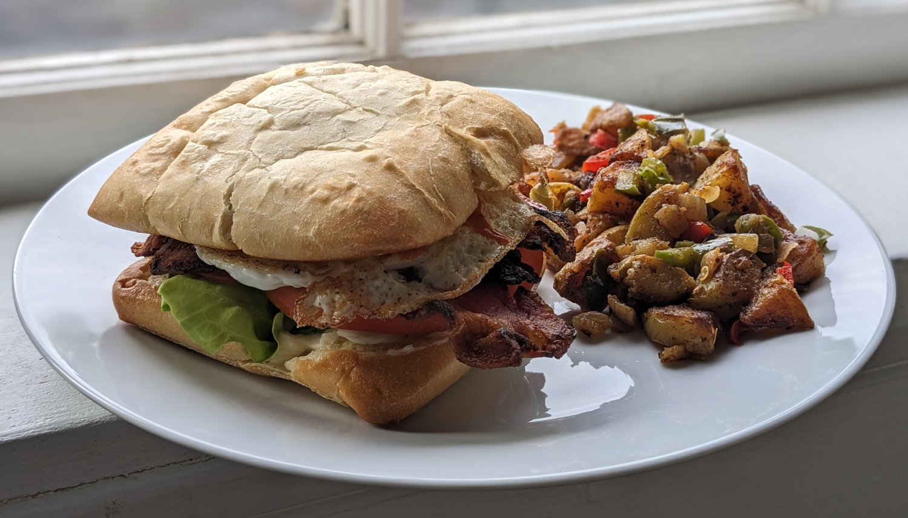

Breakfast BLT

Author: Derek Nichols |
Cooked: April 22, 2023
Yields: 2 Servings | Prep Time: 5 Minutes | Cook Time: 20 Minutes
Ingredients
- 6 pieces thick cut bacon
- 1 head of butter lettuce
- 1 heirloom tomato
- Preferred bread - we used 2 ciabatta rolls
- Mayonnaise (Duke's)
- 2 eggs
- Salt
- Pepper
- Garlic powder
- Hot sauce
Directions
- Place a wire rack onto a jelly roll pan and place the bacon on the rack spaced evenly.
- Put the bacon into the oven and turn the oven onto 350°. Note: Do not preheat the oven! Cook the bacon for approximately 18 minutes or until it reaches your desired doneness.
- While the bacon cooks, prep your vegetables. If using butter lettuce, remove the entire root and wash the leaves. Use the leafy parts and remove any large stems.
- Cut the tomato into slices of desired thickness slicing horizontally.
- When the bacon is nearly finished, spread mayonnaise on both slices of bread and place mayo side down in a pan over medium heat. Cook until golden brown.
- When bacon is done, remove from oven. Pour some of the bacon grease into the pan that was just used to toast the bread, and then crack two eggs into the pan. Season with salt, pepper, and garlic powder. As the eggs cook, spoon some of the extra bacon grease over them to cook the top.
- To assemble, spread additional mayo on the bottom half of the bread. Place lettuce over the mayo and then tomatoes. Add some sprinkles of salt on top of the tomato. Place three pieces of bacon over the tomatoes and the egg on top. Add a few dashes of hot sauce and the top bun.
Additional Notes
- If I did this on regular bread, I would probably skip the fry with mayo step and just toast it instead.
- I'd like to try this on sourdough.
- A bakery that we would always go to in Martinsburg, PA called Mamie's has a killer breakfast BLT where they use some sort of garlic spread it seems. Gotta figure that one out...